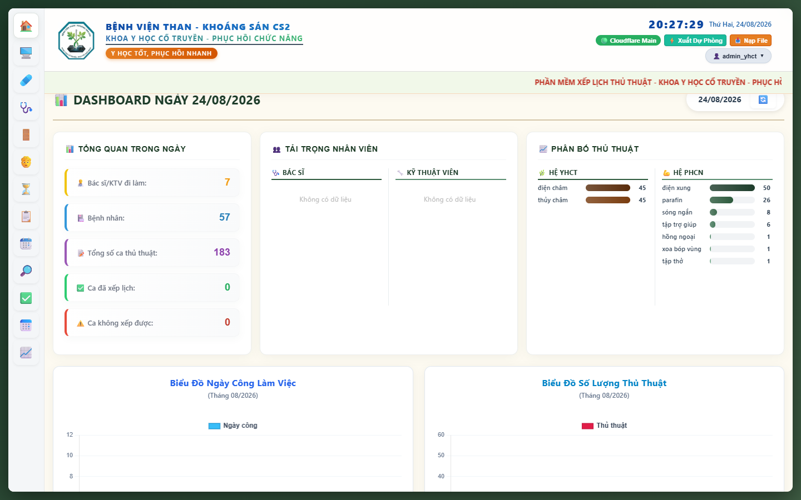
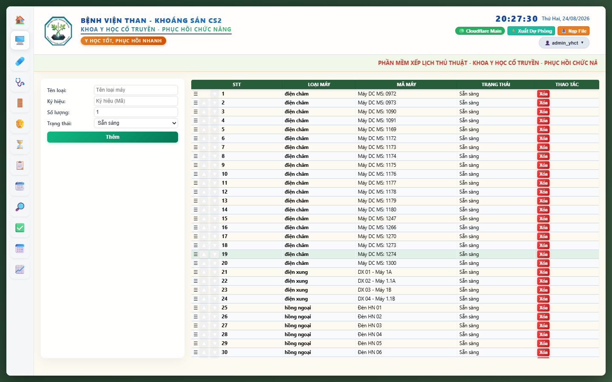
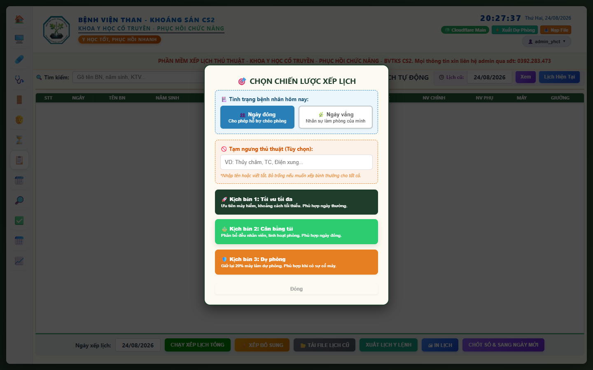
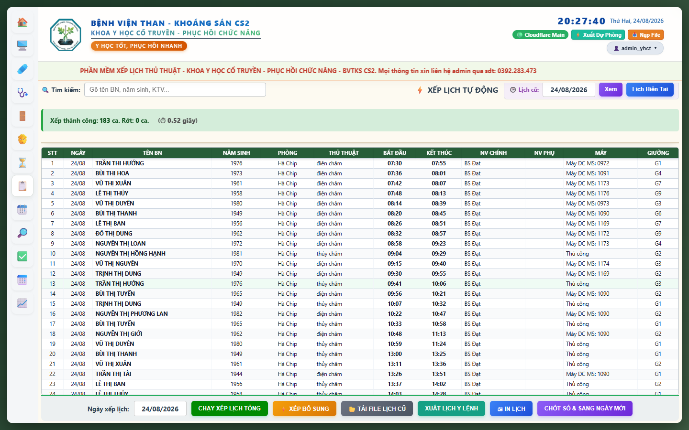
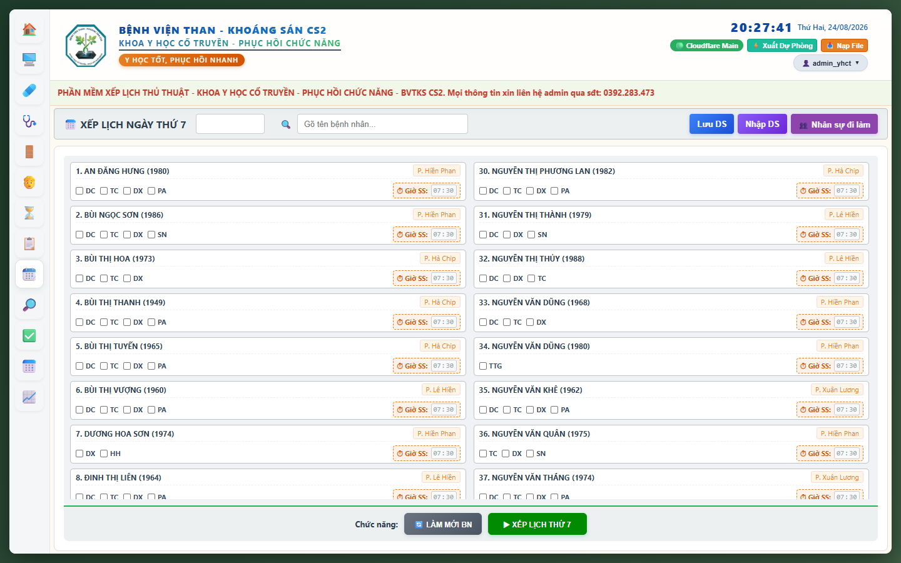

TÀI LIỆU HƯỚNG DẪN SỬ DỤNG TOÀN DIỆN HỆ THỐNG XẾP LỊCH T.I.M.E.S. SYSTEM V3.2.5
1. GIỚI THIỆU TỔNG QUAN & KIẾN TRÚC TAM TRỤ TỐI ƯU HÓA
Phần mềm T.I.M.E.S. System v3.2.5 (Treatment Intelligent Management & Efficiency Scheduler) là nền tảng quản trị và tự động hóa xếp lịch thủ thuật Y học cổ truyền & Phục hồi chức năng thế hệ mới, vận hành hoàn toàn trên điện toán đám mây Cloudflare Edge D1 và xử lý cục bộ trên trình duyệt.
• 🤖 Nhóm 3 (AI & Machine Learning Co-pilot): Tự động học từ hơn 20.449 dòng lịch sử thực tế trong 5 tháng qua, phân tích ma trận thói quen gán nhân sự - phòng bệnh, phân bổ khung giờ vàng YHCT/PHCN và nhận diện các nút thắt tắc nghẽn máy móc.
• 🚀 Nhóm 2 (Đa Luồng Web Workers & Metaheuristics): Khai thác song song 2 - 8 nhân CPU, kết hợp Tabu Search (bộ nhớ cấm lặp) + Late Acceptance Hill Climbing (LAHC) + Nén khe hở lịch (*Gap-Compression*) cho tốc độ quét siêu tốc ~0.1s.
• 🧠 Nhóm 1 (Quy Hoạch Ràng Buộc Toán Học CP-SAT & Branch-and-Bound): Áp dụng quy hoạch ràng buộc không gian rời rạc, tiếp nhận nghiệm mồi từ Nhóm 2 để rà soát toàn bộ cây nghiệm và giải cứu triệt để các ca xung đột máy hiếm.
Những cam kết chất lượng của phiên bản v3.2.5:
- 0% Trùng Giờ: Tuyệt đối không trùng Bác sĩ, KTV, Máy móc, Giường bệnh hay khung giờ bận của bệnh nhân.
- Tối Giản Hóa Giao Diện: Tinh gọn chỉ còn đúng 2 Kịch Bản Xếp Lịch Cốt Lõi (Kịch bản 1: Tối ưu nhanh & Kịch bản 2: Toán học chuyên sâu).
- Bảo Mật Tuyệt Đối & Không Chi Phí Máy Chủ: Toàn bộ quá trình tính toán diễn ra ngay trên CPU thiết bị của bác sĩ; dữ liệu lưu trữ bền vững trên Cloudflare SQLite D1.
2. ĐĂNG NHẬP, BẢO MẬT & ĐIỀU HƯỚNG GIAO DIỆN
Hệ thống hỗ trợ đăng nhập đa vai trò phân quyền (Admin toàn quyền hoặc User chỉ xem/thao tác tab được chỉ định).

Các bước đăng nhập & thao tác nhanh:
- Nhập Tên đăng nhập và Mật khẩu, bấm
Enterđể đăng nhập. - Thanh Header Đa Năng:
- Hiển thị tên người dùng và vai trò phân quyền.
- Nút
🌙/☀️: Chuyển đổi linh hoạt giao diện Sáng / Tối. - Nút
🟢 Cloudflare Main: Xem trạng thái kết nối Cloudflare Worker & D1 Database.
- Menu Ngang Trên Cùng: Chuyển đổi nhanh giữa các Tab chức năng (Bệnh Nhân, Xếp Lịch, Thứ 7, Giờ Bận, Chấm Công, Thống Kê, Tiện Ích, Kiểm Tra, Danh Mục, Cài Đặt).
3. BẢNG ĐIỀU KHIỂN TRANG CHỦ (DASHBOARD)
Dashboard cung cấp bức tranh tổng thể thời gian thực về tình hình tiếp nhận bệnh nhân, khối lượng thủ thuật và tiến độ điều phối trong ngày.

Các chỉ số then chốt trên Dashboard:
- Chỉ số tổng hợp: Số Bác sĩ & KTV đi làm, Tổng số bệnh nhân có mặt, Tổng ca chỉ định, Số ca xếp thành công, Số ca rớt.
- Tải trọng công việc nhân viên: Số lượng ca phân bổ thực tế cho từng nhân sự để đảm bảo công bằng.
- Phân bố nhóm kỹ thuật: Thống kê số ca Điện châm, Thủy châm, Điện xung, Sóng ngắn, Parafin, Kéo giãn, Siêu âm...
4. KHỐI QUẢN LÝ 5 DANH MỤC HỆ THỐNG
4.1 Quản Lý Danh Mục Máy Móc
Quản lý toàn bộ 63+ máy móc, thiết bị điều trị hiện có tại khoa. Hỗ trợ sắp xếp thứ tự ưu tiên bằng thao tác kéo thả ☰ SortableJS.

4.2 Quản Lý Danh Mục Thủ Thuật
Cấu hình các thông số y khoa chuẩn cho từng kỹ thuật điều trị:
| Thông số | Ý nghĩa chuyên môn | Quy tắc xếp lịch |
|---|---|---|
| Tên Viết Tắt | Mã định danh hiển thị trên lịch & y lệnh | DC (Điện châm), TC (Thủy châm), DX (Điện xung)... |
| TG Thực Hiện | Thời gian nhân sự trực tiếp thao tác (phút) | Bác sĩ/KTV chỉ bị khóa lịch trong thời gian này, sau đó rảnh tay đi làm ca khác. |
| TG Thủ Thuật | Tổng thời gian máy duy trì trên người bệnh | Giường và máy sẽ bị giữ chỗ liên tục suốt thời gian này. |
| Khoảng Cách Nghỉ | Thời gian đệm an toàn giữa 2 ca của cùng 1 BN | Tránh dồn dập ca thủ thuật, giúp người bệnh hồi phục thể trạng. |
| Rút máy / Người phụ | Cấu hình điều dưỡng hỗ trợ rút máy | Giải phóng Bác sĩ/KTV chính sớm hơn. |
4.3 Quản Lý Nhân Sự Y Tế
Quản lý Bác sĩ, KTV, Điều dưỡng, trạng thái đi làm, phân quyền danh sách kỹ năng chuyên môn và cài đặt giờ làm việc (07:30 - 11:30 & 13:00 - 16:30).
4.4 Quản Lý Phòng & Giường Bệnh
Cấu hình các phòng thủ thuật (Phòng 101, Phòng 102, Phòng 103...), số giường tối đa trong phòng, danh sách máy móc cố định và nhân sự phụ trách chính theo phòng.
4.5 Quản Lý Phác Đồ Lâm Sàng
Khai báo các gói phác đồ điều trị mẫu (ví dụ: Phác đồ Thoát vị đĩa đệm, Phác đồ Đau vai gáy, Phác đồ Di chứng tai biến...) để gán 1-chạm hàng loạt thủ thuật cho bệnh nhân mới.
5. KHỐI TIẾP NHẬN & QUẢN LÝ BỆNH NHÂN
5.1 Tiếp Nhận & Lọc Bệnh Nhân
Tiếp nhận bệnh nhân nhanh chóng với bảng chọn checkbox 2 hệ YHCT & PHCN, hỗ trợ phân loại Nội trú / Ngoại trú và buổi điều trị (Sáng / Chiều / Tự động).

5.2 Khai Báo Giờ Bận & Giờ Ra Viện
Hệ thống tôn trọng tuyệt đối các khoảng thời gian bận:
- Giờ bận của Bác sĩ / KTV: Đi hội chẩn, họp khoa, công tác đột xuất (VD:
08:30-09:30). - Giờ bận của Bệnh nhân: Đi xét nghiệm, chụp X-quang, truyền dịch (VD:
09:00-10:00). - Giờ ra viện trong ngày: Bệnh nhân ra viện lúc 15:30 sẽ được ưu tiên xếp xong toàn bộ thủ thuật trước 15:30.
6. PHÂN HỆ XẾP LỊCH TỰ ĐỘNG - 2 KỊCH BẢN CỐT LÕI
Khi bấm nút CHẠY XẾP LỊCH TỔNG, hộp thoại tinh gọn với đúng 2 Kịch Bản Tinh Hoa sẽ xuất hiện:

| Kịch bản | Đặc điểm công nghệ | Thời gian chạy | Trường hợp áp dụng |
|---|---|---|---|
| 🚀 Kịch bản 1: Tối Ưu Nhanh | Web Worker đa luồng song song (4-8 nhân CPU) + Tabu Search + LAHC + Nén khe hở lịch. | 0.1s - 0.3s | Dùng cho ngày làm việc thường quy (đạt tỷ lệ xếp thành công 100%). |
| 🧠 Kịch bản 2: Toán Học Chuyên Sâu | Quy hoạch ràng buộc toán học CP-SAT + Hybrid Warm-Start + Branch-and-Bound rà soát toàn bộ cây nghiệm. | 0.5s - 1.5s | Dùng cho ngày siêu cao điểm hoặc khi có nhiều ca phức tạp cần giải cứu xung đột. |
6.3 Ma Trận Lịch Trình Chi Tiết & Thao Tác Bổ Trợ

- ⚡ XẾP BỔ SUNG: Xếp thêm bệnh nhân mới đến muộn vào các khe trống còn lại mà không làm xáo trộn lịch của các bệnh nhân đã xếp trước đó.
- 📤 XUẤT LỊCH Y LỆNH: Xuất file Excel chuẩn định dạng y lệnh bệnh viện để in ấn và dán tại các buồng bệnh.
- 🖨 IN LỊCH TRÌNH: Xuất bản in theo từng phòng hoặc toàn khoa khổ giấy A4/A3.
- 🟣 CHỐT SỔ & SANG NGÀY MỚI: Lưu dữ liệu ngày hôm nay vào bảng lịch sử D1 và chuẩn bị danh sách bệnh nhân cho ngày làm việc kế tiếp.
7. PHÂN HỆ XẾP LỊCH THỨ 7 CHUYÊN BIỆT
Dành riêng cho ca trực sáng Thứ 7 theo mô hình thẻ bệnh nhân (Card View) với thời gian điều trị cô đọng (07:30 - 11:30):

- Tích chọn danh mục thủ thuật làm riêng cho ngày Thứ 7 của từng bệnh nhân.
- Cài đặt Giờ Sẵn Sàng (Giờ SS) theo giờ thực tế bệnh nhân có mặt tại viện.
- Khai báo danh sách Bác sĩ / KTV đi trực qua nút
👥 Nhân sự đi làmvà bấm ▶ XẾP LỊCH THỨ 7.
8. CÁC TIỆN ÍCH KIỂM SOÁT & TRA CỨU THÔNG MINH
8.1 Tiện Ích Kiểm Tra Lỗi Lịch
Tự động rà soát toàn bộ lịch trình và phát hiện ngay nếu có bất kỳ vi phạm nào về trùng Bác sĩ, trùng KTV, trùng Giường bệnh hay sai quy trình y tế.
8.2 Tiện Ích Tìm Khung Giờ Rảnh
Hỗ trợ tìm ngay Bác sĩ hoặc Máy móc đang rảnh rỗi trong các khung giờ sáng / chiều để tiếp nhận ca phát sinh hoặc đổi lịch theo yêu cầu của người bệnh.
9. KHỐI CHẤM CÔNG & THỐNG KÊ TỔNG HỢP
9.1 Bảng Chấm Công Điện Tử
Chấm công trực tiếp theo tháng, phân loại ngày công (Đi làm, Trực, Phép, Nghỉ bù...), tự động tính tổng công và đồng bộ tức thì lên Cloudflare D1.
9.2 Thống Kê Tổng Hợp & Xuất Thực Lĩnh
Thống kê số lượng thủ thuật theo Phân loại Loại 1, Loại 2, Loại 3 của từng nhân sự, tính toán tiền công thực lĩnh và xuất báo cáo Excel chỉ với 1 cú nhấp chuột.
10. TRUNG TÂM HUẤN LUYỆN & TỐI ƯU HÓA TRÍ TUỆ NHÂN TẠO (AI)
Nằm riêng biệt tại mục 🤖 Huấn Luyện AI trong Menu Quản Trị, đây là trái tim điều phối thông minh của phần mềm:
• Ma trận thói quen nhân sự: Học xem Bác sĩ/KTV nào chuyên làm thủ thuật nào tại phòng nào để gán chuẩn xác như điều phối viên kinh nghiệm.
• Khung giờ vàng: Tự động xếp các ca châm cứu/thủ công vào đầu giờ sáng, chia đều máy móc trong ngày.
• Dự báo tắc nghẽn: Phát hiện các máy có tải cao (Kéo giãn, Siêu âm, Sóng ngắn) để ưu tiên xử lý trước.
10.1 Bảng Điều Khiển AI Thời Gian Thực
- 📊 Dữ liệu lịch sử đã học: Hiển thị chính xác số dòng thực tế từ bảng
lich_sucủa Cloudflare D1 (tự động tăng dần theo thời gian). - ⏰ Lần huấn luyện gần nhất: Hiển thị đầy đủ giờ phút giây và ngày tháng năm (ví dụ:
12:15:30 - 29/08/2026). - 👥 Cặp thói quen nhân sự: Số lượng mẫu kết hợp *(Nhân sự @ Phòng @ Thủ thuật)* đã được tối ưu.
10.2 Tự Động Huấn Luyện Định Kỳ Theo Giờ Chỉ Định
Bác sĩ không cần phải nhớ bấm nút thủ công mỗi ngày. Hệ thống có tiến trình chạy nền tự động quét và huấn luyện lại AI hàng ngày theo khung giờ đã chọn (Mặc định: **`17:00`** hàng ngày). Ngoài ra, bác sĩ có thể bấm nút **`🤖 HUẤN LUYỆN AI`** bất cứ lúc nào để cập nhật tức thì.
11. QUẢN TRỊ HỆ THỐNG, BẢO MẬT & SAO LƯU CLOUDFLARE D1
- Cài đặt hệ thống: Tùy chỉnh dòng chữ chạy thông báo toàn khoa, giờ chốt sổ tự động, thời gian YHCT kết thúc muộn vào giờ nghỉ trưa/chiều, và các trọng số phạt của thuật toán.
- Quản lý tài khoản: Tạo mới, đổi mật khẩu và phân quyền chi tiết cho từng tài khoản nhân viên.
- Tự động sao lưu lên Google Drive: Cấu hình Webhook Google Apps Script để Cloudflare tự động đẩy bản backup
.sql/.jsonlên Google Drive của khoa hàng ngày lúc 17:00.
12. BẢNG PHÍM TẮT & MẸO VẬN HÀNH TỐI ƯU
| Phím tắt / Thao tác | Chức năng | Phân hệ áp dụng |
|---|---|---|
Ctrl + F5 |
Tải lại trang và xóa bộ nhớ cache trình duyệt để nạp bản cập nhật mới nhất | Toàn hệ thống |
Enter |
Đăng nhập nhanh hoặc lưu form dữ liệu | Đăng nhập / Modal |
Kéo thả ☰ |
Thay đổi thứ tự ưu tiên của Bệnh nhân, Nhân sự, Máy móc, Phòng bệnh | Các bảng danh mục |
Double Click ô |
Chỉnh sửa nhanh thông tin ca thủ thuật hoặc bệnh nhân | Bảng bệnh nhân / Bảng lịch |